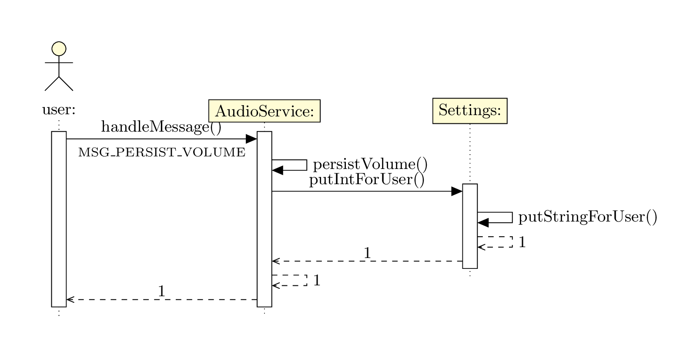

\documentclass[border=20pt]{standalone}
\usepackage[english]{babel}
\usepackage{tikz-uml}
\begin{document}
\small\begin{tikzpicture}
\begin{umlseqdiag}
\umlactor{user}
\umlobject{AudioService}
\umlobject[]{Settings}
\begin{umlcall}[op=handleMessage(),return=1,name=a]{user}{AudioService}
\begin{umlcall}[op=persistVolume(),return=1]{AudioService}{AudioService}
\begin{umlcall}[op=putIntForUser(),return=1]{AudioService}{Settings}
\begin{umlcall}[op=putStringForUser(),return=1]{Settings}{Settings}
\end{umlcall}
\end{umlcall}
\end{umlcall}
\end{umlcall}
\end{umlseqdiag}
\node [below,font=\scriptsize] at (a-op.south) {MSG\_PERSIST\_VOLUME};
\end{tikzpicture}
\end{document}Created by David Li